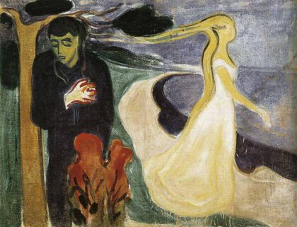

Edvard Munch,1863 - 1944,"Symbolism,Expressionism",Norwegian,"Edvard Munch (; Norwegian: [ˈɛdvɑʈ ˈmʊŋk] (listen); 12 December 1863 – 23 January 1944) was a Norwegian painter, whose best known work, The Scream, has become one of the most iconic images of world art.",https://en.wikipedia.org/wiki/Edvard_Munch,67
